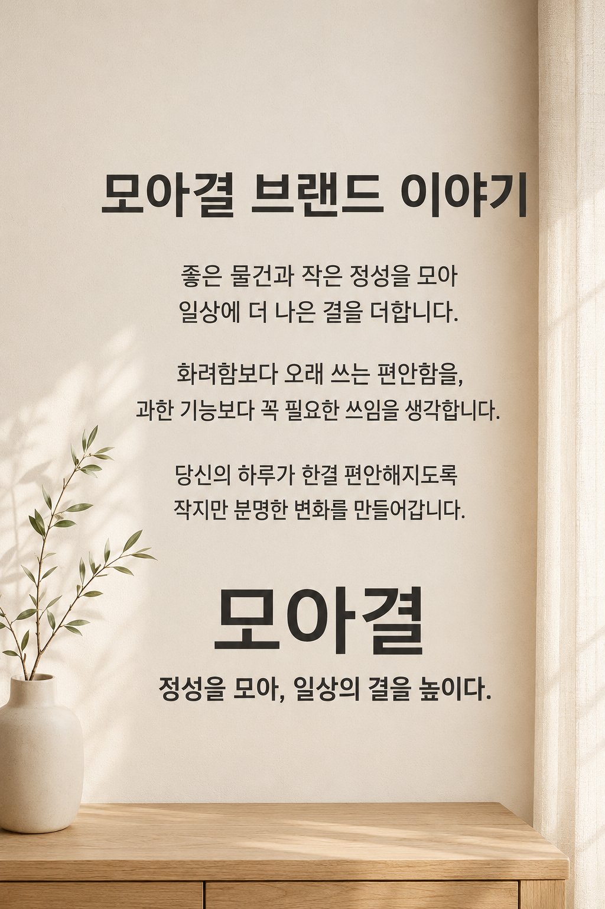

손으로 남기는 기록
빈 페이지와 짧은 메모.
생각을 천천히 정리하는 시간.
A PERSONAL JOURNAL · MOAGYEOL
익숙한 공간을 조금 더 편안하게.
좋아하는 것과 오래 간직하고 싶은 생각을 모읍니다.

THE MOOD OF MOAGYEOL01 — MY STORY
모아결은 작은 정성과 일상의 쓰임을 생각하는 이름입니다.
화려함보다 오래 쓰는 편안함을,
과한 기능보다 꼭 필요한 쓰임을 생각합니다.
이곳에는 모아결이 담고 싶은 분위기와 생각을 차곡차곡 기록하려 합니다.
02 — LITTLE THINGS
작은 취향들이 모여, 하나의 일상이 됩니다.
빈 페이지와 짧은 메모.
생각을 천천히 정리하는 시간.
책상 위의 여백.
마음에도 자리를 내어주는 정리.
따뜻한 색과 부드러운 질감.
잠깐 머물러도 편안한 순간.
03 — BEGINNING
좋은 물건과 작은 정성을 모아
일상에 더 나은 결을 더한다는 마음.
그 마음에서 이 공간을 시작합니다.